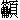

郟鄏門開城倚天，周公拮搆尚依然。
休言道德無關鎖，一閉乾坤八百年。
這首詩，單說西京是帝王之都，左成皋，右澠池，前伊闕，後大河；真個形勢無雙，繁華第一；宋朝九代建都於此。今日說一樁故事，乃是西京人氏，一個是邢知縣，一個是單推官。他兩個都在孝感坊下，並門而居。兩家宅眷，又是嫡親姊妹，姨丈相稱。所以往來甚密，雖為各姓，無異一家。先前，兩家未做官時節，姊妹同時懷孕，私下相約道：「若生下一男一女，當為婚姻。」後來單家生男，小名符郎；邢家生女，小名春娘。姊妹各對丈夫說通了，從此親家往來，非止一日。符郎和春娘幼時常在一處游戲，兩家都稱他為小夫婦。以後漸漸長成，符郎改名飛英，字騰實，進館讀書；春娘深居繡閣，各不相見。
其時宋徽宗宣和七年，春三月，邢公選了鄧州順陽縣知縣，單公選了揚州府推官，各要挈家上任。相約任滿之日，歸家成親。單推官帶了夫人和兒子符郎，自往揚州去做官，不題。卻說邢知縣到了鄧州順陽縣，未及半載，值金韃子分道入寇。金將斡離不攻破了順陽，邢知縣一門遇害。春娘年十二歲，為亂兵所掠，轉賣在全州樂戶楊家，得錢十七千而去。春娘從小讀過經書及唐詩千首，頗通文墨，尤善應對。鴇母愛之如寶，改名楊玉，教以樂器及歌舞，無不精絕。正是：
三千粉黛輸顏色，十二朱樓讓舞歌。
只是一件，他終是宦家出身，舉止端詳。每詣公庭侍宴，呈藝畢，諸妓調笑謔浪，無所不至；楊玉嘿然獨立，不妄言笑，有良人風度。為這個上，前後官府，莫不愛之重之。
話分兩頭。卻說單推官在任三年，時金虜陷了汴京，徽宗、欽宗兩朝天子，都被他擄去。虧殺呂好問說下了偽帝張邦昌，迎康王嗣統。康王渡江而南，即位於應天府，是為高宗。高宗懼怕金虜，不敢還西京，乃駕幸揚州。單推官率民兵護駕有功，累遷郎官之職，又隨駕至杭州。高宗愛杭州風景，駐蹕建都，改為臨安府。有詩為證：
山外青山樓外摟，西湖歌舞幾時休？
煖風熏得游人醉，卻把杭州作汴州。
話說西北一路地方，被金虜殘害，百姓從高宗南渡者，不計其數，皆散處吳下。聞臨安建都，多有搬到杭州入籍安插。單公時在戶部，閱看戶籍冊子，見有一「邢祥」名字，乃西京人。自思：「邢知縣名禎，此人名祥，敢是同行兄弟？」從游宦以後，邢家全無音耗相通，正在懸念。乃遣人密訪之，果邢知縣之弟，號為「四承務」者。急忙請來相見，問其消息。四承務答道：「自鄧州破後，傳聞家兄舉家受禍，未知的否。」因流淚不止。單公亦愀然不樂。念兒子年齒已長，意欲別圖親事；猶恐傳言未的，媳婦尚在，且待干戈寧息，再行探聽。從此單公與四承務仍認做親戚，往來不絕。
再說高宗皇帝初即位，改元建炎。過了四年，又改元紹興。此時紹興元年，朝廷追敘南渡之功，單飛英受父蔭，得授全州司戶。謝恩過了，擇日拜別父母起程，往全州到任。時年十八歲，一州官屬，只有單司戶年少，且是儀容俊秀，見者無不稱羨。上任之日，州守設公堂酒會飲，大集聲妓。原來宋朝有這個規矩：凡在籍娼戶，謂之官妓，官府有公私筵宴，聽憑點名喚來祗應。這一日，楊玉也在數內。單司戶於眾妓中，只看得他上眼，大有眷愛之意。詩曰：
曾綰紅繩到處隨，佳人才子兩相宜。
風流的是張京兆，何日臨窗試畫眉？
司理姓鄭，名安，滎陽舊族，也是個少年才子。一見單司戶，便意氣相投，看他顧盼楊玉，已知其意。一日，鄭司理去拜單司戶，問道：「足下清年名族，為何單車赴仕，不攜宅眷？」單司戶答道：「實不相瞞，幼時曾定下妻室，因遭虜亂，存亡未卜，至今中饋尚虛。」司理笑道：「離索之感，人孰無之？此間歌妓楊玉，頗饒雅致，且作望梅止渴，何如？」司戶初時遜謝不敢，被司理言之再三，說到相知的分際，司戶隱瞞不得，只得吐露心腹。司理道：「既才子有意佳人，僕當為曲成之耳。」自此每遇宴會，司戶見了楊玉，反覺有些避嫌，不敢注目；然心中思慕愈甚。司理有心要玉成其事，但懼怕太守嚴毅，做不得手腳。
如此二年。舊太守任滿升去。新太守姓陳，為人忠厚至誠，且與鄭司理是同鄉故舊。所以鄭司理屢次在太守面前，稱薦單司戶之才品，太守十分敬重。一日，鄭司理置酒，專請單司戶到私衙清話，只點楊玉一名祗候。這一日，比公堂筵宴不同，只有賓主二人，單司戶纔得飽看楊玉，果然美麗！有詞名《憶秦娥》，詞云：
香馥馥，樽前有個人如玉。人如玉，翠翹金鳳，內家妝束。嬌羞慣把眉兒蹙，逢客人只唱傷心曲。傷心曲，一聲聲是怨紅愁綠。
鄭司理開言道：「今日之會，並無他客，勿拘禮法，當開懷暢飲，務取盡歡。」遂斟巨觥來勸單司戶，楊玉清歌侑酒。酒至半酣，單司戶看著楊玉，神魂飄蕩，不能自持，假裝醉態不飲。鄭司理已知其意，便道：「且請到書齋散步，再容奉勸。」那書齋是司理自家看書的所在，擺設著書、畫、琴、棋，也有些古玩之類。單司戶那有心情去看，向竹榻上倒身便睡。鄭司理道：「既然仁兄困酒，暫請安息片時。」忙轉身而出，卻教楊玉斟下香茶一甌送去。單司戶素知司理有玉成之美，今番見楊玉獨自一個送茶，情知是放鬆了，忙起身把門掩上，雙手抱住楊玉求歡。楊玉佯推不允，單司戶道：「相慕小娘子，已非一日，難得今番機會。司理公平昔見愛，就使知覺，必不嗔怪。」楊玉也識破三分關竅，不敢固卻，只得順情。兩個遂在榻上，草草的雲雨一場。有詩為證：
相慕相憐二載餘，今朝且喜兩情舒。
雖然未得通宵樂，猶勝陽臺夢是虛。
單司戶私問楊玉道：「你雖然才藝出色，偏覺雅致，不似青樓習氣，必是一個名公苗裔。今日休要瞞我，可從實說與我知道，果是何人？」楊玉滿面羞慚，答道：「實不相瞞，妾本宦族，流落在此，非楊嫗所生也。」司戶大驚，問道：「既系宦族，汝父何官何姓？」楊玉不覺雙淚交流，答道：「妾本姓邢，在東京孝感坊居住，幼年曾許與母姨之子結婚。妾之父授鄧州順陽縣知縣，不幸胡寇猖獗，父母皆遭兵刃，妾被人掠賣至此。」司戶又問道：「汝夫家姓甚？作何官職？所許嫁之子，又是何名？」楊玉道：「夫家姓單，那時為揚州推官。其子小名符郎，今亦不知存亡如何。」說罷，哭泣不止。司戶心中已知其為春娘了，且不說破，只安慰道：「汝今日鮮衣美食，花朝月夕，勾你受用。官府都另眼看覷，誰人輕賤你？況宗族遠離，夫家存亡未卜，隨緣快活，亦足了一生矣。何乃自生悲泣耶？」楊玉蹙頞答道：「妾聞『女子生而願為之有家』，雖不幸風塵，實出無奈。夫家宦族，即使無恙，妾亦不作團圓之望。若得嫁一小民，荊釵布裙，啜菽飲水，亦是良人家媳婦。比在此中迎新送舊，勝卻千萬倍矣。」司戶點頭道：「你所見亦是。果有此心，我當與汝作主。」楊玉叩頭道：「恩官若能拔妾於苦海之中，真乃萬代陰德也。」
說未畢，只見司理推門進來道：「陽臺夢醒也未？如今無事，可飲酒矣。」司戶道：「酒已過醉，不能復飲。」司理道：「一分酒醉，十分心醉。」司戶道：「一分醉酒，十分醉德。」大家都笑起來。重來筵上，洗盞更酌，是日盡歡而散。
過了數日，單司戶置酒，專請鄭司理答席，也喚楊玉一名答應。楊玉先到，單司戶不復與狎呢，遂正色問曰：「汝前日有言，為小民婦亦所甘心；我今喪偶，未有正室，汝肯相隨我乎？」楊玉含淚答道：「枳棘豈堪鳳凰所棲，若恩官可憐，得蒙收錄，使得備巾櫛之列，豐衣足食，不用送往迎來，固妾所願也。但恐他日新孺人性嚴，不能相容。然妾自當含忍，萬一徵色發聲，妾情願持齋佞佛，終身獨宿，以報恩官之德耳。」司戶聞言，不覺傪然，方知其厭惡風塵，出於至誠，非誑語也。
少停，鄭司理到來，見楊玉淚痕未干，戲道：「古人云『樂極生悲』，信有之乎？」楊玉斂容答道：「憂從中來，不可斷絕耳！」單司戶將楊玉立志從良說話，向鄭司理說了。鄭司理道：「足下若有此心，下官亦願效一臂。」這一日，飲酒無話。
席散後，單司戶在燈下修成家書一封，書中備言岳丈邢知縣全家受禍，春娘流落為娼，厭惡風塵，志向可憫。男情願復聯舊約，不以良賤為嫌。單公拆書親看，大驚，隨即請邢四承務到來，商議此事，兩家各傷感不已。四承務要親往全州主張親事，教單公致書於太守，求為春娘脫籍。單公寫書，付與四承務收訖，四承務作別而行。不一日，來到全州，逕入司戶衙中相見，道其來歷。單司戶先與鄭司理說知其事，司理一力攛掇，道：「諺云：『貴易交，富易妻。』今足下甘娶風塵之女，不以存亡易心，雖古人高義，不是過也。」遂同司戶到太守處，將情節告訴。單司戶把父親書札呈上，太守看了，道：「此美事也，敢不奉命？」次日，四承務具狀告府，求為釋賤歸良，以續舊婚事，太守當面批准了。
候至日中，還不見發下文牒。單司戶疑有他變，密使人打探消息。見廚司正在忙亂，安排筵席。司戶猜道：「此酒為何而設？豈欲與楊玉舉離別觴耶？事已至此，只索聽之。」少頃，果召楊玉祗候，席間只請通判一人。酒至三巡，食供兩套，太守喚楊玉近前，將司戶願續舊婚，及邢祥所告脫籍之事，一一說了。楊玉拜謝道：「妾一身生死榮辱，全賴恩官提拔。」太守道：「汝今日尚在樂籍，明日即為縣君，將何以報我之德？」楊玉答道：「恩官拔人於火宅之中，陰德如山，妾惟有日夕

天，願恩官子孫富貴而已。」太守嘆道：「麗色佳音，不可復得。」不覺前起抱持楊玉，說道：「汝必有以報我。」那通判是個正直之人，見太守發狂，便離席起立，正色發作道：「既司戶有宿約，便是孺人，我等俱有同僚叔嫂之誼。君子進退當以禮，不可苟且，以傷雅道。」太守踧踖，謝道：「老夫不能忘情，非判府之言，不知其為過也。今得罪於司戶，當謝過以質耳。」乃令楊玉入內宅，與自己女眷相見。卻教人召司理、司戶二人，到後堂同席，直吃到天明方散。太守也不進衙，逕坐早堂，便下文書與楊家翁、媼，教除去楊玉名字。楊翁、楊媼出其不意，號哭而來，拜著太守，訴道：「養女十餘年，費盡心力。今既蒙明判，不敢抗拒。但願一見而別，亦所甘心。」太守遣人傳語楊玉。楊玉立在後堂，隔屏對翁、嫗說道：「我夫妻重會，也是好事。我雖承汝十年撫養之恩，然所得金帛已多，亦足為汝養老之計。從此永訣，休得相念。」嫗兀自號哭不止。太守喝退了楊翁、楊嫗。當時差州司人從，自宅堂中擡出楊玉，逕送至司戶衙中；取出私財十萬錢，權佐資奩之費。司戶再三推辭，太守定教受了。是日，鄭司理為媒，四承務為主婚，如法成親，做起洞房花燭。有詩為證：
風流司戶心如渴，文雅嬌娘意似狂。
今夜官衙尋舊約，不教人話負心郎。
次日，太守同一府官員都來慶賀，司戶置酒相待。四承務自歸臨安，回復單公去訖。司戶夫妻相愛，自不必說。
光陰似箭，不覺三年任滿。春娘對司戶說道：「妾失身風塵，亦荷翁嫗愛育；其他姊妹中相處，也有情分契厚的。今將遠去，終身不復相見。欲具少酒食，與之話別，不識官人肯容否？」司戶道：「汝之事，合州莫不聞之，何可隱諱？便治酒話別，何礙大體？」春娘乃設筵於會勝寺中，教人請楊翁、楊嫗，及舊時同行姊妹相厚者十餘人，都來會飲。至期，司戶先差人在會勝寺等候眾人到齊，方纔來稟。楊翁、楊嫗先到，以後眾妓陸續而來。從人點客已齊，方敢稟知司戶，請孺人登輿。僕從如雲，前呼後擁，到會勝寺中，與眾人相見。略敘寒喧，便上了筵席。飲至數巡，春娘自出席送酒。內中一妓，姓李名英，原與楊嫗家連居，其音樂技藝，皆是春娘教導，常呼春娘為姊，情似同胞，極相敬愛。自從春娘脫籍，李英好生思想，常有郁郁之意。是日，春娘送酒到他面前，李英忽然執春娘之手，說道：「姊今超脫污泥之中，高翔青雲之上，似妹於沉淪糞土，無有出期，相去不啻天堂、地獄之隔，姊今何以救我？」說罷，遂放聲大哭。春娘不勝淒慘，流淚不止。原來李英有一件出色的本事：第一手好針線，能於暗中縫紉，分際不差。正是：
織髮夫人昔擅奇，神針娘子古來稀。誰人乞得天孫巧？十二樓中一李姬。
春娘道：「我司戶正少一針線人，吾妹肯來與我作伴否？」李英道：「若得阿姊為我方便，得脫此門路，是一段大陰德事。若司戶左右要覓針線人，得我為之，素知阿姊心性，強似尋生分人也。」春娘道：「雖然如此，但吾妹平日與我同行同輩，今日豈能居我之下乎？」李英道：「我在風塵中，每自退姊一步。況今日雲泥迴隔，又有嫡庶之異，即使朝夕奉侍阿姊，比於侍婢，亦所甘心。況敢與阿姊比肩耶？」春娘道：「妹既有此心，奴當與司戶商之。」
當晚席散，春娘回衙，將李英之事對司戶說了。司戶笑道：「一之為甚，豈可再乎！」春娘再三攛掇，司戶只是不允，春娘悶悶不悅。一連幾日，李英遣人以問安奶奶為名，就催促那事。春娘對司戶說道：「李家妹情性溫雅，針線又是第一，內助得如此人，誠所罕有。且官人能終身不納姬侍則已，若納他人，不如納李家妹，與我少小相處，兩不見笑。官人何不向守公求之？萬一不從，不過拼一沒趣而已，妾亦有詞以回絕李氏。倘僥幸相從，豈非全美！」司戶被孺人強逼數次，不得已，先去與鄭司理說知了，捉了他同去見太守，委曲道其緣故。太守笑道：「君欲一箭射雙雕乎？敬當奉命，以贖前此通判所責之罪。」當下太守再下文牒，與李英脫籍，送歸司戶。司戶將太守所贈十萬錢，一半給與李嫗，以為贖身之費；一半給與楊嫗，以酬其養育之勞。自此春娘與李英姊妹相稱，極其和睦。當初單飛英隻身上任，今日一妻一妾，又都是才色雙全，意外良緣，歡喜無限。後人有詩云：
官舍孤居思黯然，今朝彩線喜雙牽。
符郎不念當時舊，邢氏徒懷再世緣。
空手忽擎雙塊玉，污泥挺出並頭蓮。
姻緣不論良和賤，婚牒書來五百年。
單司戶選吉起程，別了一府官僚，挈帶妻妾，還歸臨安宅院。單飛英率春娘拜見舅姑，彼此不覺傷感，痛哭了一場。哭罷，飛英又率李英拜見。單公問是何人，飛英述其來歷。單公大怒，說道：「吾至親骨肉，流落失所，理當收拾，此乃萬不得已之事。又旁及外人，是何道理？」飛英皇恐謝罪，單公怒氣不息。老夫人從中勸解，遂引去李英於自己房中，要將改嫁。李英那裡肯依允，只是苦苦哀求。老夫人見其至誠，且留作伴。過了數日，看見李氏小心婉順，又愛他一手針線，遂勸單公收留與兒子為妾。
單飛英遷授令丞。上司官每聞飛英娶娼之事，皆以為有義氣；互相傳說，無不加意欽敬，累薦至太常卿。春娘無子，李英生一子，春娘抱之，愛如己出。後讀書登第，遂為臨安名族。至今青樓傳為佳話。有詩為證：
山盟海誓忽更遷，誰向青樓認舊緣？仁義還收仁義報，宦途無梗子孫賢。
本章完!